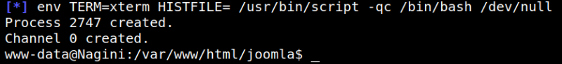
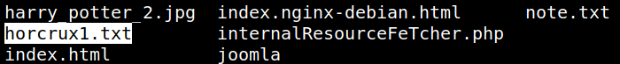
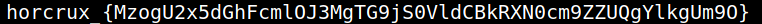

4.3 Opening a shell (Getting the first flag)
1. On the “meterpreter” you got type the following.
meterpreter > shell -t
Output:

2. List the files.
cd ..
ls -la
ls -la
Output:

3. Getting the flag.
cat horcrux1.txt
Output:

The part in the curly brackets (MzogU2x5dGhFcmlOJ3MgTG9jS0VldCBkRXN0cm9ZZUQgYlkgUm9O) is a base64 encoded string.
4. Let's decode it. On your Kali Machine run the following command.
$echo 'MzogU2x5dGhFcmlOJ3MgTG9jS0VldCBkRXN0cm9ZZUQgYlkgUm9O' | base64 --decode
Output:
SlythEriN's LocKEet dEstroYeD bY RoN